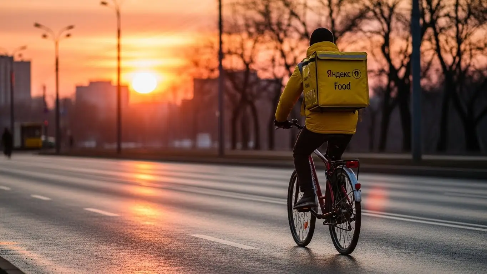
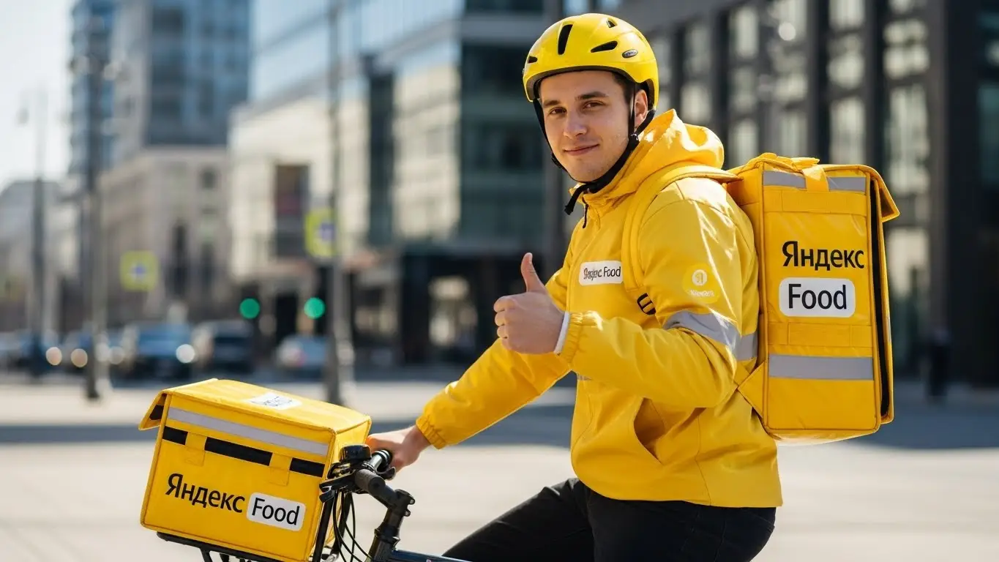

Заработок курьером Яндекс Еды в Пушкино в 2025-2026: разбор
- Работа курьером Яндекс Еды в Пушкино: для кого эта вакансия и что вы получите
- Сколько вы будете зарабатывать курьером в Пушкино: калькулятор дохода и разбор выплат
- Реальный заработок курьера в Пушкино: смены и месячный доход
- График работы и форматы занятости
- Требования к кандидату и документы
- Самозанятость, налоги и юридическая чистота
- Пошаговое оформление и первый выход на линию в Пушкино
- Пешком, на вело или на авто: что выгоднее в Пушкино
- Районы, маршруты и «топовые» зоны заказов в Пушкино
- Безопасность, страховка, штрафы и оплата простоя
- Плюсы и возможные минусы работы курьером в Пушкино
- Реальные истории и отзывы курьеров из Пушкино
- Ответы на главные вопросы о работе курьером Яндекс Еды в Пушкино
- Короткие ответы на главные вопросы
- Итоги и ваш следующий шаг
Все города
Думаешь, работа курьером в Пушкино — это просто легкие деньги на свободном графике? Как бы не так. Я тоже так думал, пока не начал жечь свой бензин в пробках у станции или убивать ноги по частному сектору в Мамонтовке. Ты смотришь на рекламные цифры, а в голове крутятся вопросы: «А что, если заказов не будет?», «Сколько я реально положу в карман после всех расходов?», «Не убью ли я свою машину на местных дорогах?». Давай честно: это не просто текст из интернета, это разбор полетов по нашему городу, где доставка из «Вкусно — и точка» в Новой Деревне и заказ из Яндекс Лавки в Клязьме — это две совершенно разные истории.
Поверь, без понимания местной «кухни» ты рискуешь разочароваться в первый же месяц. Работа курьером в Пушкино — это не только крутить педали или руль. Это учитывать расходы на транспорт, платить налоги как самозанятый, понимать, как работает система приоритета и почему твой рейтинг решает, получишь ты «жирный» заказ в час пик или будешь возить один кофе за три километра. Большинство новичков здесь наступают на одни и те же грабли: теряют время в глухих зонах, не знают, где лучше ждать заказы в дождь, и в итоге зарабатывают меньше, чем могли бы. Чтобы узнать все детали, включая калькулятор дохода и форму для быстрой заявки, посмотри официальную страницу: работа курьером Яндекс Еда в Пушкино.
В этом гиде я разложу всё по полочкам. Мы посчитаем, сколько на самом деле можно заработать в Пушкино пешком, на велосипеде и на авто с учетом всех расходов. Я покажу на карте, где находятся самые «хлебные» районы и в какое время там лучше всего работать. Разберём, как погода и сезоны влияют на доход, за что реально могут ограничить доступ к заказам и как этого избежать. И, конечно, сравним, что предлагают другие сервисы доставки, работающие в нашем городе. Никакой воды — только цифры, факты и личный опыт.
Меня зовут Алексей. Я сам не один год откатал с коробом за спиной по нашему городу, а теперь у меня свой небольшой таксопарк-партнер, так что я вижу эту систему с двух сторон. Забудь про рекламные буклеты, которые обещают золотые горы. Я расскажу тебе всё как есть: про реальные доходы, подводные камни и лайфхаки, которые работают именно в Пушкино. В общем, пристегивайся (или зашнуровывай кроссовки), начнём с главного.
Чтобы ты сразу понял, о чём пойдёт речь и стоит ли читать дальше, вот короткий навигатор по статье.
Что ты точно узнаешь из этого разбора по Пушкино
В этой статье ты ТОЧНО узнаешь:
- Сколько реально можно заработать в Пушкино за смену пешком, на вело и на авто.
- В каких районах города больше всего заказов и как погода влияет на доход.
- Что выгоднее для работы в Пушкино: ходить пешком, крутить педали или ездить на своей машине.
- За что на самом деле снижают рейтинг и как работает система штрафов в Яндекс Еде.
- Что такое «оплата простоя» и как она защищает твой заработок, если заказов нет.
- Почему нужно быть самозанятым и насколько сложно платить налоги.
А если тебе некогда читать всю статью — переходи сразу к заключению, где ты найдёшь короткие ответы на все эти вопросы и указания, в каких разделах искать подробности.
А для тех, кто не любит много букв, а верит цифрам, — вот ключевые показатели по Пушкино в одной картинке.
Работа курьером в Пушкино: ключевые цифры
Доход в час
450-650 ₽
В часы высокого спроса и с бонусами
Доход за смену
3 200-4 500 ₽
Средний заработок за 8-10 часов работы
Чаевые
~20% заказов
Примерно каждый 5-й клиент оставляет на чай
Особенность города
Велосипед
Оптимален для центра и спальных районов
Работа курьером Яндекс Еды в Пушкино: для кого эта вакансия и что вы получите
Эта работа в Яндекс Еде — не для избранных, а для тех, кому нужны деньги и гибкость. В Пушкино курьерами становятся самые разные люди, и у каждого свои причины. Кто-то ищет первую работу или подработку, кто-то — способ быстро закрыть финансовые дыры, а для кого-то это основной и стабильный источник дохода. Главное здесь — не диплом или предыдущий опыт, а твоё желание работать и наличие смартфона.
Сервис устроен так, чтобы ты мог начать зарабатывать практически сразу, без долгой бюрократии и собеседований. Если у тебя есть пара свободных часов в день или ты готов работать полную смену, эта вакансия тебе подойдёт. Условия максимально прозрачны: твой доход напрямую зависит от времени и усилий, а не от настроения начальника.

Кому подойдёт эта работа в Пушкино
По моему опыту, в Пушкино в доставке Яндекс Еды успешно работают несколько категорий людей. Во-первых, это студенты. Учёбу легко совмещать с доставкой благодаря свободному графику — можно выходить на пару часов после пар или работать в выходные. Во-вторых, это люди, которым нужна подработка к основной зарплате. Вечерние смены или работа по субботам помогают неплохо пополнить семейный бюджет.
Также это отличный старт для тех, у кого нет опыта работы. Здесь не требуют резюме и рекомендаций, всему научат в процессе, помогут с термокоробом и первыми заказами. Для водителей-курьеров на своём авто это возможность превратить машину в инструмент заработка, выполняя больше заказов на большие расстояния. И, конечно, это работа для всех, кому важен гибкий график и быстрые ежедневные выплаты — деньги на карту приходят сразу, не нужно ждать конца месяца.
Главные преимущества для жителей районов Дзержинец, Серебрянка, Мамонтовка
Одно из главных удобств работы курьером в Пушкино — возможность выходить на смены прямо из дома. Если ты живёшь в густонаселённых районах, таких как Дзержинец, Серебрянка или Мамонтовка, тебе не придётся тратить время и деньги на дорогу до «рабочего места». Просто включаешь приложение «Яндекс Про», выходишь из подъезда и начинаешь принимать заказы.
В этих районах всегда много заказов из ресторанов, кафе и магазинов. Это значит, что работа всегда будет рядом. Ты можешь доставлять еду из Яндекс Еды в соседний дом или отвозить посылки в рамках Яндекс Доставки. Такая локальная работа экономит силы и позволяет лучше ориентироваться на знакомой территории, а значит — выполнять заказы быстрее и зарабатывать больше.
Краткое обещание по доходу и условиям
Если говорить о деньгах, то в Пушкино курьер может рассчитывать на реальный доход. Твоя зарплата зависит от активности: за одну смену (8–10 часов) можно заработать в среднем от 3000 до 4500 рублей. Если рассматривать это как подработку на несколько часов в день, то выходит 1500–2500 рублей. В месяц при полной занятости доход может достигать 75 000–90 000 рублей и выше, особенно у водителей-курьеров.
Ключевые условия работы просты и прозрачны. Ты работаешь, когда тебе удобно, выбирая слоты в приложении — это и есть свободный график. Деньги за выполненные заказы можно выводить на карту хоть каждый день. И самое важное — начать можно без опыта. Тебя всему научат на коротком онлайн-инструктаже, а дальше всё зависит только от тебя.
***
Кейс из практики: Парень, студент местного колледжа, живёт в Серебрянке. Начал работать пешим курьером, чтобы накопить на новый телефон. Выходил на 3-4 часа по вечерам после учёбы и на полные смены в выходные. Работал в основном в своём районе, хорошо знал все дворы и короткие пути. За первый месяц, не особо напрягаясь, заработал около 35 000 рублей. Понял, что дело выгодное, купил недорогой велосипед и стал зарабатывать ещё больше, успевая брать больше заказов.
Краткий вывод: Работа курьером в Яндекс Еде в Пушкино — это доступный вариант для студентов, водителей и всех, кому нужна подработка или основной доход с гибким графиком. Главные плюсы — возможность работать в своём районе и получать ежедневные выплаты. Мой совет: если живёшь в крупном жилом массиве, начинай работать именно там — сэкономишь время на дорогу и быстрее войдёшь в ритм.
Сколько вы будете зарабатывать курьером в Пушкино: калькулятор дохода и разбор выплат
Многих новичков волнует главный вопрос: «Сколько я буду зарабатывать?». Важно понимать, что у курьера Яндекс Еды нет фиксированного оклада. Твой доход — это сумма нескольких составляющих, и он может меняться каждый день в зависимости от спроса, погоды и твоего усердия. Это не минус, а плюс: ты сам влияешь на свой заработок.
Чтобы не гадать на кофейной гуще, сервис предлагает удобный инструмент — калькулятор дохода. Он помогает прикинуть, на какие цифры можно ориентироваться в Пушкино, работая пешком, на велосипеде или на авто. Но чтобы правильно им пользоваться и в целом понимать, откуда берутся деньги, нужно разобраться в структуре выплат. Давай разложим всё по полочкам.
Из чего складывается доход курьера
Твой итоговый заработок за смену — это не просто плата за количество заказов. Он складывается из нескольких частей, и это важно понимать, чтобы работать эффективнее.
- Оплата за заказ. Это базовая стоимость за то, что ты забрал и доставил заказ из ресторана или магазина.
- Доплата за расстояние. Чем дальше нести или везти заказ, тем больше доплата. Система рассчитывает оптимальный маршрут и платит за каждый его километр.
- Повышающие коэффициенты. В часы пик (обед, ужин), в плохую погоду (дождь, снег) или в зонах высокого спроса (центр города, районы с ТЦ) на карте в приложении «Яндекс Про» появляются «фиолетовые» зоны. Заказы из этих зон оплачиваются дороже — иногда в 1.5, 2, а то и в 3 раза.
- Бонусы. Сервис часто предлагает персональные цели. Например, выполни 15 заказов за день и получи дополнительно 500 рублей. Это отличный стимул работать активнее.
- Чаевые. Все чаевые, которые оставляют клиенты через приложение, полностью твои. Сервис не берёт с них комиссию.
- Оплата простоя. Это важная гарантия. Если ты вышел на плановый слот, а заказов временно нет, сервис всё равно начисляет минимальную оплату за твоё время на линии. Ты не останешься с нулём.
- Компенсация проезда. Для пеших курьеров на очень длинных маршрутах может быть предусмотрена компенсация стоимости проезда на общественном транспорте.
Как пользоваться калькулятором дохода
Калькулятор — это твой предварительный план по заработку. Пользоваться им очень просто. Сначала ты выбираешь свой город — Пушкино. Затем указываешь способ доставки: пеший курьер, велокурьер или водитель-курьер на своем авто.
Далее ты выставляешь ползунками планируемую занятость: сколько часов в день и сколько дней в неделю ты готов работать. На основе этих данных и средней статистики по городу калькулятор покажет тебе примерный диапазон твоего дохода за день и за месяц. Это не стопроцентная гарантия, но очень хороший ориентир, который поможет понять, на что можно рассчитывать при разной степени загруженности.
Калькулятор дохода курьера в Пушкино
8 часов
5 дней
Примерный доход в месяц:
90 000 ₽
(около 3 600 ₽ за смену)
* Расчёт основан на средней ставке в Пушкино (~450 ₽/час). Реальный доход зависит от спроса, бонусов, чаевых и типа доставки (пеший, вело, авто).
Чтобы увидеть самые актуальные цифры и сразу подать заявку, загляни на официальную страницу: работа курьером Яндекс Еда в твоём городе. Там же найдёшь подробные условия и ответы на вопросы.
Примеры расчёта для пешего, вело- и авто‑курьера в Пушкино
Давай посмотрим на конкретных примерах, как может выглядеть заработок в Пушкино.
- Пеший курьер. Представь, что ты студент и выходишь на подработку на 4 часа вечером в будни. Работаешь в центре Пушкино, в районе Московского проспекта и улицы Некрасова, где много кафе. За вечер ты успеваешь сделать 6–8 коротких доставок. С учётом бонуса за количество заказов твой доход за смену составит примерно 1600–2000 рублей.
- Велокурьер. Ты работаешь по 6–7 часов в выходной день, активно перемещаясь между спальными районами, например, из Дзержинца в Заветы Ильича. На велосипеде ты быстрее, поэтому выполняешь 12–15 заказов. Попадаешь в зону с повышенным коэффициентом во время обеда. Твой заработок за такой день может составить 3000–3800 рублей.
- Водитель-курьер. Ты работаешь полную 8-часовую смену на своей машине. Берёшь как заказы по городу, так и дальние доставки в Клязьму, Мамонтовку или даже в соседнюю Ивантеевку. В дождливую погоду спрос на автодоставку резко растёт, и ты работаешь с высоким коэффициентом. За день ты можешь заработать 4500–6000 рублей и больше.
***
Кейс из практики: Мой знакомый водитель-курьер в Пушкино как-то раз отлично заработал в сильный ливень. Он специально вышел на линию вечером, когда все сидели по домам и активно заказывали еду. Включил в «Яндекс Про» режим «повышенный спрос», и заказы посыпались один за другим с коэффициентом х2. Он курсировал между центром и новыми ЖК на окраине. За 5 часов работы он сделал почти 7000 рублей — больше, чем иногда выходит за полный рабочий день в хорошую погоду.
Краткий вывод: Заработок курьера в Яндекс Еде — это гибкая система, где ты сам можешь влиять на итоговую сумму. Понимая, из чего складывается доход, и используя пиковые часы, плохую погоду и бонусы, можно зарабатывать значительно больше среднего. Мой совет: всегда смотри на карту спроса в приложении «Яндекс Про» перед выходом на смену и планируй своё время так, чтобы захватить обеденные и вечерние часы — это самое прибыльное время.

Реальный заработок курьера в Пушкино: смены и месячный доход
Давай к главному — к деньгам. Сколько реально можно заработать курьером в Яндекс Еде в Пушкино, если не лениться и подходить к делу с головой. Цифры я даю чистыми, без учёта налога для самозанятых (6%), но водителям-курьерам нужно ещё вычитать расходы на бензин. Это не обещания из рекламы, а то, что парни у меня в парке и знакомые самозанятые приносят домой.
Заработок курьера — это не лотерея. Он напрямую зависит от того, как, где и когда ты работаешь. Кто-то выходит на пару часов в день подышать воздухом и заработать на кофе, а кто-то использует свободный график, чтобы пахать полный рабочий день и обеспечивать семью. Оба варианта в Пушкино вполне реальны, главное — понимать, на что рассчитывать.
Диапазон дохода для подработки и полной занятости
Если ты ищешь подработку на 2–4 часа в день, например, после основной работы или учёбы, цифры будут примерно такие. Доход пешего курьера в среднем составляет 800–1500 рублей за короткую смену. Велокурьер за то же время увезёт уже 1200–2200 рублей, так как успевает выполнить больше заказов на средние дистанции. Курьер на автомобиле за 3-4 часа может заработать и 2000–3000 рублей, особенно если поймает несколько дальних доставок. В месяц на такой подработке выходит от 20 000 до 45 000 рублей, в зависимости от транспорта и количества смен.
При полной занятости, на сменах по 8–10 часов, доход совсем другой. Пеший курьер стабильно зарабатывает 2500–3500 рублей в день. Велосипедист, который хорошо знает город и не боится крутить педали, может привозить 3500–5000 рублей. Водитель на своем авто при полной загрузке делает 4500–7000 рублей в день. В пересчёте на месяц при графике 5/2 это уже серьёзная зарплата: от 60 000–70 000 у пеших до 100 000–140 000 рублей у самых активных курьеров на автомобиле.
Как район, время суток и погода влияют на доход
Твой заработок — это не просто ставка в час. Он складывается из множества факторов, и умный курьер умеет их использовать. Главные три кита высокого дохода: время, погода и место. В Пушкино пиковые часы — это обед с 12:00 до 15:00 и вечер с 18:00 до 22:00, когда люди заказывают еду. В это время в приложении «Яндекс Про» карта горит фиолетовым — это зоны с повышенным коэффициентом, где заказ вместо 150 рублей может стоить 250–300.
Погода — твой лучший друг. Как только начинается дождь, снегопад или сильная жара, большинство людей предпочитают сидеть дома и заказывать доставку. Спрос взлетает, а количество курьеров на линии падает. В итоге коэффициенты растут, а клиенты становятся щедрее на чаевые. Работать в такую погоду тяжелее, но и плата за это соответствующая. То же самое касается районов: в центре, около ТРЦ «Пушкино Парк» или в густонаселённых новых микрорайонах вроде «Нового Пушкино» заказов всегда больше, чем в тихом частном секторе.
Советы по увеличению заработка от опытных курьеров
Вот несколько практических советов, как зарабатывать больше, а уставать меньше. Во-первых, планируй смены заранее. Заходи в «Яндекс Про» и бронируй плановые слоты в зонах с высоким спросом. Это даёт приоритет в заказах, бонусы и иногда гарантирует минимальную оплату, даже если заказов будет мало. Во-вторых, не гоняйся за одним «дорогим» заказом через весь город. Часто выгоднее оставаться в одной зоне с постоянным потоком средних заказов, чем тратить время на дорогу.
Выбирай транспорт с умом. Для центра Пушкино, где много коротких заказов и сложно с парковкой, велосипед или самокат — идеальный вариант. Если работаешь по всему городу, включая дальние районы вроде Мамонтовки или Клязьмы, без машины не обойтись, особенно зимой. И главный совет: будь вежлив и аккуратен. Используй термокороб, чтобы еда приезжала горячей — хороший рейтинг и положительные отзывы напрямую влияют на то, какие заказы тебе будет предлагать система. Плюс, довольные клиенты чаще оставляют чаевые.
График работы и форматы занятости
Одно из главных преимуществ работы курьером — гибкие условия и свободный график. Ты сам себе начальник и решаешь, когда и сколько работать. Это идеальный вариант для тех, кто не хочет сидеть в офисе с 9 до 18 или кому нужны деньги здесь и сейчас. Можно выходить на пару часов в день, а можно работать полную неделю — сервис подстроится под твои нужды.
Никто не будет стоять над душой и заставлять выходить на линию. Захотел — включил приложение «Яндекс Про» и принимаешь заказы. Появились дела — выключил и занимаешься ими. Такая свобода отлично подходит и для подработки, и как основной источник дохода, если ты достаточно дисциплинирован, чтобы самому себе ставить рабочий план.
Подработка после учёбы или основной работы
Совмещать доставку с чем-то ещё — проще простого. Вот пара реальных примеров. Есть у меня знакомый студент, учится в РГУТиС. Он выходит на смены 3-4 раза в неделю по вечерам, с 18:00 до 22:00. Катается на велосипеде по центру и ближайшим микрорайонам. За такой вечер он стабильно привозит 1500–2000 рублей. В месяц набегает 25 000–30 000 рублей — отличная прибавка к стипендии.
Другой пример — мужчина, который работает в офисе 5/2. Ему нужны были дополнительные деньги на ремонт. Он стал выходить на своей машине в субботу и воскресенье на полные смены, по 8-10 часов. За выходные у него получается заработать 10 000–12 000 рублей до вычета бензина. За месяц это плюс 40 000–50 000 к основной зарплате. Он работает в комфортном для себя режиме и не выгорает.
Полная занятость: как выглядит типичный день курьера
Если ты решил сделать доставку своей основной работой, твой день будет выглядеть примерно так. Утром проснулся, позавтракал, проверил приложение «Яндекс Про» — посмотрел, где уже есть зоны с повышенным спросом. Обычно курьеры выходят на линию к 10–11 утра, чтобы захватить первые заказы на обед. С 12:00 до 15:00 — самый пик, заказы идут один за другим, времени на перерыв почти нет.
После обеденного пика наступает затишье. Это время можно использовать, чтобы перекусить, отдохнуть или переместиться в другой район, где ожидается вечерний спрос. Например, из центра можно сместиться в спальные районы типа Серебрянки или Арманда. Второй пик начинается около 18:00 и длится до 21:00–22:00. После этого поток заказов спадает, и можно заканчивать смену. За такой день накатываешь много километров, но и заработок соответствующий.
Как планировать слоты и выходы через приложение «Яндекс Про»
Приложение «Яндекс Про» — твой главный рабочий инструмент. В нём ты не только видишь заказы, но и планируешь свою работу. Есть два режима: свободный выход и плановые слоты. В первом случае ты просто нажимаешь кнопку «На линию» и начинаешь работать в любой точке. Во втором — заранее бронируешь время и зону работы. Я всегда советую новичкам использовать плановые слоты.
Планирование даёт тебе преимущество: система будет активнее предлагать заказы именно в твоей зоне. Самое важное — не опаздывать на начало слота. Если ты забронировал смену с 12:00, то в 11:55 ты уже должен быть в указанном районе и нажать кнопку «Начать». Регулярные опоздания или пропуски слотов негативно влияют на твой рейтинг Активности. А чем ниже рейтинг, тем меньше у тебя будет заказов, особенно выгодных. Система поощряет пунктуальных и надёжных курьеров, так что относись к этому серьёзно.
Требования к кандидату и документы
Многих новичков пугает этап с документами и требованиями. Кажется, что сейчас попросят кипу бумаг и диплом о высшем образовании. На деле всё гораздо проще. Сервису нужны исполнители, а не космонавты, поэтому условия максимально адекватные и рассчитаны на обычного человека, который хочет зарабатывать. Главное — быть совершеннолетним, иметь базовый пакет документов и желание двигаться.
Возраст, гражданство и базовые условия
Давай сразу по главному. Чтобы стать курьером Яндекс Еды, тебе должно быть полных 18 лет. Это строгое правило, связанное с материальной ответственностью и юридическими аспектами договора. Никаких исключений для 16- или 17-летних, к сожалению, нет. По гражданству тоже всё чётко: принимают граждан Российской Федерации, а также граждан стран ЕАЭС — это Беларусь, Казахстан, Армения и Киргизия.
Что касается физической формы, то от тебя не ждут олимпийских рекордов. Если ты пеший курьер, будь готов много ходить. Для велокурьера важна выносливость, чтобы крутить педали несколько часов подряд. Водителю-курьеру проще физически, но требуется внимательность за рулём. По сути, если у тебя нет серьёзных медицинских противопоказаний к умеренным нагрузкам, ты справишься. Многие ребята, наоборот, используют эту работу как бесплатный фитнес.
Какие документы нужны для работы курьером
Список документов минимальный, и скорее всего, всё необходимое у тебя уже под рукой. Никакой беготни по инстанциям не потребуется.
Вот что нужно подготовить:
- Паспорт. Основной документ для подтверждения личности и возраста. Нужен будет оригинал для регистрации.
- ИНН (Идентификационный номер налогоплательщика). Он необходим для оформления самозанятости и уплаты налогов. Если ты не помнишь свой номер, его можно за пару минут узнать на сайте ФНС или через Госуслуги.
- Банковская карта. Подойдёт карта любого российского банка, оформленная на твоё имя. На неё будут приходить ежедневные выплаты.
- Медицинская книжка. Здесь есть нюанс. Для доставки запечатанных заказов из ресторанов она, как правило, не требуется. Но если планируешь доставлять продукты из магазинов (например, из Яндекс Лавки или партнёрских сетей), медкнижка может понадобиться. Лучше уточнить актуальные требования для Пушкино на этапе оформления.
Как видишь, ничего сверхъестественного. Стандартный набор для любой официальной подработки.
Можно ли работать с 16 лет и какие есть альтернативы
Отвечу честно и прямо: в Яндекс Еду устроиться курьером с 16 или 17 лет не получится. Минимальный возраст — 18 лет. Это связано с тем, что курьер несёт полную материальную ответственность за заказы и денежные средства, а заключать такие договоры по закону можно только с совершеннолетними. Сервис не может рисковать и брать на себя дополнительные юридические сложности.
Если тебе ещё нет 18, но работать хочется, не стоит отчаиваться. Можно рассмотреть другие варианты подработки, где законодательство позволяет нанимать подростков. Например, некоторые местные кафе в Пушкино могут брать промоутеров для раздачи листовок или помощников на кухню с согласия родителей. Но в крупных агрегаторах доставки, вроде Яндекса, порог входа — именно совершеннолетие.
***
Из практики: у меня был случай с парнем из Пушкино, ему было 19. Он думал, что оформление займёт неделю. Собрал паспорт, карту, а ИНН найти не мог. Я ему подсказал зайти на сайт налоговой — через две минуты номер был у него на экране. Медкнижка для доставки из ресторанов в итоге не понадобилась. Он заполнил анкету вечером, на следующий день прошёл обучение, и через день уже вышел на свой первый слот в центре города. Вся «бюрократия» заняла меньше суток.
Краткий вывод: Требования к курьеру и список документов очень простые. Чтобы стать курьером, нужен стандартный пакет бумаг, возраст от 18 лет и гражданство РФ или ЕАЭС. Главный совет: перед заполнением анкеты найди свой ИНН, чтобы не тратить на это время в процессе регистрации.
Самозанятость, налоги и юридическая чистота
Многих новичков пугает слово «самозанятость» и связанные с ней налоги. Кажется, что это что-то сложное, с отчётами и бумажной волокитой. На самом деле, это самый простой и современный способ работать курьером официально. Государство специально создало этот налоговый режим (НПД), чтобы всё было максимально прозрачно и без головной боли.
Почему курьеры Яндекс Еды работают как самозанятые
Формат самозанятости (или налог на профессиональный доход, НПД) — это, по сути, партнёрские отношения с сервисом. Ты не сотрудник в штате с жёстким графиком, а независимый исполнитель. Именно это даёт тебе свободу выбирать, когда и сколько работать. Яндекс — это платформа, которая даёт тебе заказы, а ты их выполняешь.
Основные плюсы такого формата:
- Это официально. Твой доход полностью «белый». Это значит, что ты можешь без проблем взять кредит или подтвердить свой заработок для получения визы.
- Никакой бухгалтерии. Тебе не нужно вести книги учёта, сдавать декларации и нанимать бухгалтера. Всё происходит автоматически через приложение.
- Простота и удобство. Все операции — от регистрации до уплаты налога — делаются в телефоне за пару кликов.
- Низкая налоговая ставка. Ты платишь всего 6% с дохода, полученного от юридического лица (Яндекса), и никаких других скрытых сборов.
По сути, оформление самозанятости — это компромисс между свободой фриланса и стабильностью официальной работы. Ты получаешь легальный статус, сохраняя при этом гибкий график.
Как за 10 минут оформить самозанятость через «Мой налог»
Регистрация статуса самозанятого занимает не больше времени, чем заказ пиццы. Всё делается онлайн, никуда ходить не нужно.
Вот пошаговая инструкция:
- Скачай приложение. Зайди в Google Play или App Store и скачай официальное приложение ФНС России — «Мой налог».
- Начни регистрацию. Открой приложение и выбери самый простой способ — «Регистрация по паспорту РФ».
- Отсканируй паспорт. Наведи камеру телефона на главный разворот паспорта. Приложение само распознает все данные.
- Сделай селфи. Приложение попросит тебя сфотографироваться для подтверждения личности.
- Подтверди регистрацию. Выбери свой регион (для Пушкино это Московская область) и подтверди отправку заявления.
Через несколько минут тебе придёт уведомление, что ты зарегистрирован в качестве плательщика НПД. Весь процесс действительно занимает 5–10 минут. Также можно зарегистрироваться через приложение «Яндекс Про» — там есть встроенная функция, которая проведёт тебя по всем шагам.
Сколько и как платить налоги
Система уплаты налогов для самозанятых сделана максимально просто, чтобы ты не отвлекался от работы. Ставка налога фиксированная: 6% с доходов, полученных от организаций и ИП. Поскольку Яндекс Еда — это юридическое лицо, именно эту ставку ты и будешь платить.
Процесс выглядит так:
- Автоматический учёт. После каждой выплаты за смену Яндекс сам передаёт данные о твоём доходе в налоговую.
- Расчёт налога. Раз в месяц, до 12-го числа, приложение «Мой налог» автоматически рассчитывает сумму налога за предыдущий месяц.
- Оплата в один клик. Ты получишь push-уведомление с суммой к уплате. Заплатить можно прямо в приложении, привязав банковскую карту. Сделать это нужно до 28-го числа.
Именно поэтому работать курьером в Яндекс Еде без самозанятости нельзя — весь процесс выплат и учёта дохода построен на этой официальной и автоматизированной системе. Заплатить 6% и спать спокойно — это абсолютно разумная цена за легальность и удобство.
***
Кейс из практики: Ко мне в таксопарк как-то пришёл устраиваться водителем мужчина лет сорока. Раньше он работал на стройке в Пушкино, получал всё «в конверте». Когда я ему объяснил про самозанятость, он сначала напрягся. Я просто взял его телефон и вместе с ним за 10 минут зарегистрировал его в «Мой налог». Через месяц он заработал курьером на своей машине около 80 000 ₽. Когда пришла квитанция на 4 800 ₽ налога, он заплатил и сказал: «И это всё? Проще, чем за коммуналку заплатить».
Краткий вывод: Самозанятость для курьера — это не страшно, а выгодно и удобно. Это твой официальный статус, который даёт уверенность и снимает все юридические риски. Мой совет: сразу после оформления в «Мой налог» привяжи карту и настрой автоплатёж. Так ты точно не пропустишь срок и не будешь об этом думать.
Пошаговое оформление и первый выход на линию в Пушкино
Многие думают, что устроиться курьером в Яндекс — это долгая история с бумажками и собеседованиями. На деле всё устроено так, чтобы ты мог начать зарабатывать максимально быстро, буквально за один день, даже без опыта. Весь процесс отлажен и проходит в основном онлайн, без лишней бюрократии.
Шаг 1–2: анкета и онлайн‑обучение
Всё начинается с простой анкеты на сайте. Никаких резюме и сочинений. Нужно указать базовые данные: ФИО, номер телефона и город — Пушкино. После быстрой проверки на телефон приходит ссылка на короткое обучение. Это не нудные лекции, а несколько видеороликов и инструкций прямо в приложении.
Тебе покажут, как пользоваться приложением «Яндекс Про», принимать и выполнять заказы, общаться с клиентами и службой поддержки. Отдельный блок посвящён правилам безопасности и стандартам сервиса. В конце будет небольшой тест, чтобы убедиться, что ты всё понял. Весь процесс занимает не больше часа.
Шаг 3: получение сумки и доступа к заказам в Пушкино
После успешного прохождения теста тебе откроется доступ к заказам. Но для работы понадобится главный инструмент — фирменная термосумка или термокороб. Без них доставлять заказы из ресторанов и магазинов нельзя, это стандарт качества сервиса Яндекс Еда. В Пушкино получить экипировку можно через курьерский центр или офис партнёра-таксопарка.
Актуальный адрес, где забрать сумку, появится в приложении «Яндекс Про» сразу после обучения. Не нужно ничего искать в интернете — вся информация будет под рукой. Как только она у тебя, ты официально готов выходить на линию.
Шаг 4: первый слот и первый доход
Теперь самое интересное. Ты открываешь «Яндекс Про», видишь карту Пушкино с зонами повышенного спроса и выбираешь свой первый слот — запланированный отрезок времени для работы. Новичкам советую не бросаться в омут с головой, а выбрать короткий слот на 2–3 часа в хорошо знакомом районе. Например, если живёшь в микрорайоне Серебрянка, начни с него.
Как только слот начинается, нажимаешь кнопку «На линию», и приложение начинает предлагать заказы поблизости. Принимаешь первый, едешь в ресторан, забираешь пакет, отвозишь клиенту — и вот, первые деньги уже на твоём балансе. Весь путь от заполнения анкеты до первого заработка реально пройти за один день.
***
Из практики: парень у меня в парке, студент, решил найти подработку. Утром в 10:00 заполнил анкету, к 12:00 закончил обучение с тестом. Днём съездил в курьерский центр у станции Пушкино, забрал сумку. А вечером, с 18:00 до 21:00, вышел на свой первый слот в районе Дзержинец. Спокойно сделал 6 заказов из местных кафе, заработал около 1200 рублей — деньги пришли на карту почти сразу. Говорит, волновался только на первом заказе, а дальше всё пошло как по маслу.
Краткий вывод: Процесс регистрации и оформления максимально упрощён и нацелен на быстрый старт. Никаких сложных экзаменов и недельных ожиданий. Мой совет: как только прошёл обучение, не откладывай получение сумки. Чем быстрее ты её заберёшь, тем быстрее начнёшь превращать своё время в реальный доход с быстрыми выплатами.
Пешком, на вело или на авто: что выгоднее в Пушкино
Выбор транспорта — это не просто вопрос удобства, а ключевой фактор, который определяет твой доход и стиль работы в рамках свободного графика. В Пушкино, с его особенностями — плотным центром, протяжёнными спальными районами и активным пригородом — каждый способ доставки имеет свои сильные стороны.
Пеший курьер: для центра и плотной застройки в Пушкино
Если планируешь работать в центре города, то пеший формат — отличный выбор. В районе Московского проспекта, улиц Тургенева и Некрасова сосредоточено огромное количество кафе и магазинов. Расстояния между точкой А (ресторан) и точкой Б (клиент) здесь часто не превышают 1–1,5 км. На машине этот путь из-за светофоров и поиска парковки может занять 10–15 минут, а пеший курьер срежет через дворы и дойдёт за то же время.
Ты не зависишь от пробок, не тратишься на бензин и обслуживание транспорта. Это идеальный вариант для коротких слотов по 3–4 часа, для студентов после учёбы или как подработка в обеденный перерыв. Основной доход здесь делается на количестве коротких и быстрых доставок в зоне с высоким спросом.
Велокурьер: быстрые доставки между спальными районами
Велосипед — это золотая середина и, на мой взгляд, один из самых эффективных инструментов для работы курьером в Пушкино. Он даёт скорость, манёвренность и позволяет покрывать большие расстояния, чем пешком. Курьер на велосипеде легко объезжает пробки на Пушкинском и Старом Ярославском шоссе в часы пик и может брать заказы на 3–5 км. Это идеальный транспорт для работы в крупных спальных микрорайонах, таких как Дзержинец, Серебрянка или Арманд.
На велосипеде можно быстро перемещаться между этими районами, доставляя заказы из одного в другой. Плюс это отличная физическая нагрузка, за которую тебе ещё и платят — тот самый «оплачиваемый фитнес». Расходы минимальны — только обслуживание велосипеда. В хороший день велокурьер зарабатывает ощутимо больше пешего за счёт скорости и количества выполненных заказов.
Водитель‑курьер: заказы по всему городу и пригороду Правдинский, Лесной, Софрино
Работа на своем авто открывает доступ к самым выгодным заказам. Это доставка на дальние расстояния, крупные и тяжёлые посылки из гипермаркетов (например, из «Глобуса»), а также работа по всему городу и в пригороды — Правдинский, Лесной, Софрино, куда пешком или на велосипеде не добраться. Водитель-курьер не привязан к одному району и может выполнять заказы по всей территории от микрорайона Заветы Ильича до Клязьмы.
Особенно выгодно работать на автомобиле в плохую погоду — дождь, снег, мороз. В это время количество пеших и велокурьеров на линии резко сокращается, а спрос на доставку взлетает. Включаются повышенные коэффициенты, и стоимость одного заказа может вырасти в 1,5–2 раза. Да, есть расходы на бензин и амортизацию, но они с лихвой окупаются доходом в пиковые часы и возможностью работать с комфортом.
***
Из практики: у меня есть знакомый водитель, который совмещает работу в такси с курьерскими заказами. В прошлую субботу был сильный ливень. Он специально вышел на линию «Яндекс Еды». Сразу поймал заказ из «Вкусно — и точка» на доставку в посёлок Лесной с коэффициентом х1.8. Потом был большой заказ из супермаркета в микрорайон Мамонтовка. За 5 часов работы под дождём он заработал чистыми около 3000 рублей, потому что брал только самые «жирные» заказы, от которых отказывались другие.
Сравнение форматов доставки в Пушкино
| Параметр | Пеший курьер | Велокурьер | Курьер на авто |
|---|---|---|---|
| Зоны работы | Центр города, радиус 1-2 км | Спальные районы, радиус 3-5 км | Весь город и пригороды |
| Тип заказов | Лёгкие, из кафе и ресторанов | Стандартные, из ресторанов и магазинов | Любые, включая крупные и дальние |
| Расходы | Практически нет | Обслуживание велосипеда | Бензин, амортизация авто |
| Плюсы | Нет затрат, полезно для здоровья, независимость от пробок | Скорость, манёвренность, больше заказов в час, фитнес | Комфорт, самые дорогие заказы, работа в любую погоду |
| Минусы | Физическая нагрузка, зависимость от погоды, маленький радиус | Нужен велосипед, усталость, сезонность | Расходы на авто, пробки, поиск парковки |
***
Краткий вывод: Универсального ответа на вопрос «что выгоднее» нет. Всё зависит от твоих целей и возможностей. Мой совет: если ты живёшь в центре и хочешь подработать несколько часов в день — начинай пешком. Если у тебя есть велосипед и ты готов работать активнее — это твой вариант для спальных районов. А если есть машина, используй её как главный козырь для работы в плохую погоду и для выполнения дальних, высокооплачиваемых заказов.
Районы, маршруты и «топовые» зоны заказов в Пушкино
Чтобы в Пушкино не просто кататься, а хорошо зарабатывать, нужно понимать, где и когда концентрируются заказы. Город небольшой, но со своими «рыбными местами» и часами пик. Если бездумно курсировать по всему городу, сольёшь больше на бензин или силы, чем получишь денег. Главное правило — быть там, где люди хотят есть и делать покупки.
Всё крутится вокруг нескольких ключевых точек. Во-первых, это торговые центры, где сосредоточены фуд-корты и магазины. Во-вторых, центральные улицы с кафе и ресторанами. И в-третьих, крупные жилые массивы, откуда вечером идёт основной поток заказов еды на дом.
Где больше всего заказов: ТРЦ, центр города и жилые массивы
Самые выгодные зоны, где почти всегда есть повышенный спрос, — это, конечно, крупные торговые центры. В Пушкино это в первую очередь ТРЦ «Пушкино Парк» на Красноармейском шоссе и ТРЦ «Акварель» рядом с Ярославским шоссе. Там находятся десятки ресторанов, фуд-корты и гипермаркеты, откуда постоянно идут заказы. В обеденное время, по вечерам и особенно в выходные дни карта в этих районах в приложении «Яндекс Про» часто горит фиолетовым — это означает максимальные коэффициенты.
Второй центр притяжения — это центральная часть города. Район вокруг железнодорожной станции «Пушкино», Московского проспекта и улицы Тургенева всегда активен. Здесь много офисов, кафе, пиццерий и суши-баров. Днём заказы из Яндекс Еды идут в офисы, вечером — в квартиры поблизости. Даже если ты пеший курьер, в центре всегда найдётся работа в радиусе одного-двух километров.
Работа в своём районе: примеры для популярных жилых кварталов
Многие думают, что для хорошего заработка нужно обязательно ехать в центр. Это не так. В Пушкино можно отлично работать, не уезжая далеко от дома, особенно если ты живёшь в крупном спальном районе. Например, микрорайон «Новое Пушкино» — это, по сути, город в городе. Здесь куча новостроек, молодых семей и, соответственно, постоянный спрос на доставку из местных пиццерий, суши-баров и магазинов. Велосипед или самокат здесь — идеальный транспорт.
То же самое касается и старых, но густонаселённых районов, таких как «Серебрянка» или «Мамонтовка». Здесь меньше модных ресторанов, но много заказов из сетевых заведений и продуктовых магазинов. Плюс работы в своём районе очевиден: ты знаешь каждый двор, каждый подъезд и где лучше срезать путь. Это экономит время и позволяет выполнять заказы быстрее.
Как выбирать зоны и слоты в «Яндекс Про», чтобы не мотаться впустую
Приложение «Яндекс Про» — твой главный инструмент планирования. Ключевой элемент — это карта спроса. Она в реальном времени подсвечивается разными цветами: чем ярче и «фиолетовее» зона, тем выше там сейчас спрос и доплата к каждому заказу. Перед началом смены всегда смотри на эту карту и выбирай слот в той зоне, где уже есть активность.
Планируй своё время с умом. Самые выгодные часы — это обеденный пик (примерно с 12:00 до 15:00) и вечерний (с 18:00 до 21:00). Пятница, выходные и праздничные дни — это время, когда можно заработать больше всего. Также следи за погодой: в дождь или снег желающих выходить из дома мало, а заказов, наоборот, много. Коэффициенты в такую погоду взлетают, и твой доход может увеличиться в полтора-два раза.
***
Кейс из практики: На прошлой неделе в дождливую субботу я взял слот на 4 часа вечером. Карта в Пушкино была почти вся фиолетовая. Я сразу поехал в район ТРЦ «Акварель». Первый же заказ — большая доставка из ресторана в микрорайон «Серебрянка». Пока ехал, приложение уже предложило «цепочку» — забрать заказ из пиццерии неподалёку. В итоге я почти не останавливался, курсируя между центром и спальными районами. За 4 часа сделал 10 заказов и заработал около 3500 рублей с учётом всех бонусов. Секрет прост: быть в нужное время в нужном месте.
Сравнение зон для работы в Пушкино
| Тип зоны | Примеры в Пушкино | Лучшее время | Кому подходит |
|---|---|---|---|
| Торговые центры | ТРЦ «Пушкино Парк», ТРЦ «Акварель» | Выходные, вечера, обед | Авто- и велокурьерам (большие расстояния) |
| Центр города | Московский проспект, ул. Тургенева, ст. Пушкино | Будни (обед), вечера | Пешим и велокурьерам (короткие заказы) |
| Спальные районы | «Новое Пушкино», «Серебрянка», «Мамонтовка» | Вечера, выходные | Всем типам курьеров (работа рядом с домом) |
***
Краткий вывод: Чтобы стабильно зарабатывать в Пушкино, нужно комбинировать зоны и время. Изучай карту спроса в «Яндекс Про», не бойся плохой погоды и старайся работать в пиковые часы. Мой совет: если закончил заказ в тихом районе, не жди у моря погоды. Потрать 10 минут, чтобы доехать до ближайшей «горячей» зоны — это окупится сторицей.
Безопасность, страховка, штрафы и оплата простоя
Работа курьера — это постоянное движение, а значит, всегда есть определённые риски. Важно понимать, что ты не остаёшься с ними один на один. Яндекс предоставляет инструменты защиты, но и от тебя требуется голова на плечах и соблюдение простых правил. Это не только вопрос твоей безопасности, но и стабильности твоего дохода.
Бесплатная страховка на сменах и что она покрывает
Самое главное, что нужно знать: когда ты находишься на активном заказе в рамках планового слота, твоя жизнь и здоровье застрахованы. Это бесплатная программа от Яндекса, которая действует автоматически для всех курьеров. Не нужно ничего дополнительно оформлять или платить. Страховка покрывает несчастные случаи, которые могут произойти во время доставки.
Например, если велокурьер попадёт в ДТП и получит травму, страховка покроет расходы на лечение. Если пеший курьер поскользнётся зимой и сломает руку, он также получит компенсацию. Сумма покрытия доходит до 2 миллионов рублей. Это серьёзная поддержка, которая даёт уверенность, что в сложной ситуации ты не останешься без помощи. Главное — в случае чего сразу же сообщить о происшествии в службу поддержки через приложение.
Правила безопасности на дороге и при доставке
Страховка — это хорошо, но лучше до страховых случаев не доводить. Поэтому соблюдение элементарных правил безопасности — твоя прямая обязанность. Для пеших курьеров это означает переходить дорогу только по переходу и на зелёный свет, а в тёмное время суток носить светоотражающие элементы.
Для велокурьеров и водителей-курьеров правила ещё строже. Велосипедистам — обязательно шлем и фонари ночью, соблюдение ПДД. Водителям — не гонять, не отвлекаться на смартфон за рулём и парковаться так, чтобы не мешать другим. В плохую погоду — дождь, гололёд — снижайте скорость вдвое. Кроме того, аккуратно обращайся с заказами: надёжно закрепляй напитки, не тряси пакеты. И будь вежлив с клиентами и сотрудниками ресторанов — спокойствие сбережёт и нервы, и рейтинг.
Какие бывают штрафы и как их избежать
В Яндекс Еде нет системы штрафов в привычном понимании этого слова. Никто не будет вычитать у тебя из зарплаты 500 рублей за опоздание. Но есть система рейтинга и приоритета, а за серьёзные нарушения можно получить временную или даже постоянную блокировку аккаунта в «Яндекс Про». По сути, это и есть твой главный «штраф», потому что он напрямую влияет на твой заработок.
Рейтинг снижается за регулярные опоздания в ресторан или к клиенту, за жалобы на грубость, за повреждённые заказы. Также можно получить ограничение доступа к заказам, если часто отменять уже принятые заявки или пропускать плановые слоты без предупреждения. Чтобы этого избежать, будь пунктуальным, вежливым и ответственным. Если понимаешь, что опаздываешь, сообщи об этом в поддержку через приложение. Честность — лучший способ избежать проблем.
Что такое оплата простоя и как она защищает ваш доход
Это одна из ключевых фишек, которая выгодно отличает условия работы в Яндекс Еде. «Оплата простоя» — это твоя финансовая подушка безопасности на плановых слотах. Если ты вышел на смену, находишься в нужной зоне, готов принимать заказы, но их по какой-то причине нет, сервис начислит тебе минимальную гарантированную оплату за это время.
Проще говоря, твоё время не пропадёт даром. Система видит, что ты на линии и ждёшь, и компенсирует отсутствие заказов. Это защищает твой доход от сильных колебаний и даёт уверенность, что даже в самый «мёртвый» день ты не уйдёшь с нулём. Такая гарантия особенно важна для новичков.
***
Кейс из практики: Был случай у знакомого водителя-курьера. Он взял утренний слот в будний день в спальном районе, надеясь на заказы завтраков. Но спрос был очень низкий, за час пришёл всего один заказ. Он уже начал нервничать, но просто оставался на линии. В итоге за те два часа, что он почти не работал, система начислила ему гарантированную выплату. Сумма была небольшой, но она покрыла расходы на бензин и время.
Краткий вывод: Безопасность и правила — это не пустые слова. Соблюдай ПДД, будь аккуратен и вежлив, и тогда работа будет приносить только доход. А такие вещи, как страховка и оплата простоя, дают уверенность, что сервис о тебе заботится. Мой главный совет: всегда работай через плановые слоты. Это не только дисциплинирует, но и даёт доступ ко всем механизмам защиты твоего дохода.
Плюсы и возможные минусы работы курьером в Пушкино
Как и в любой работе, здесь есть свои светлые и тёмные стороны. Я всегда говорю новичкам: не ждите, что это лёгкие деньги, но и не бойтесь трудностей. Если подойти с умом, плюсы для тебя точно перевесят.
Сильные стороны работы курьером в Пушкино
Во-первых, это гибкий график. Ты сам решаешь, когда выходить на линию. Хочешь — используй это как подработку на 2–3 часа после основной занятости или учёбы, хочешь — выходи на полную смену в выходной. Планируешь всё через приложение «Яндекс Про».
Во-вторых, ежедневные выплаты. Это огромный плюс, особенно если деньги нужны здесь и сейчас. Дневной доход сразу поступает на карту, не нужно ждать аванса и зарплаты неделями. Это даёт ощущение полного контроля над своими финансами.
Третий важный момент — работа рядом с домом. Пушкино — город не гигантский, и ты можешь выбрать для доставок свой район, будь то Мамонтовка, Клязьма или Серебрянка. Не нужно тратить время и деньги на дорогу до работы.
Наконец, это поддержка и безопасность. Ты не остаёшься один на один с проблемами. На время смены действует бесплатная страховка жизни и здоровья. Если что-то случилось, всегда можно связаться с круглосуточной поддержкой. А официальное оформление как самозанятого — это легальный доход.
С какими сложностями чаще всего сталкиваются курьеры
Буду честен, работа не всегда похожа на прогулку в парке. Первая сложность — физическая нагрузка. Если ты пеший курьер или передвигаешься на велосипеде, будь готов много ходить или крутить педали. Со временем привыкаешь, к тому же для здоровья это скорее плюс — такой вот оплачиваемый фитнес.
Вторая очевидная вещь — работа в плохую погоду. Дождь, снег, сильный ветер или жара в Пушкино — твои постоянные спутники. Но здесь есть и обратная сторона: в плохую погоду заказов всегда больше, действуют повышенные коэффициенты, и клиенты чаще оставляют хорошие чаевые. Главное — правильно одеться.
Третий момент — возможные простои. Бывают часы, особенно днём в будни, когда заказов меньше. Сидеть и ждать — неприятно. Однако в сервисах Яндекса есть важное преимущество — оплата простоя. Если ты на плановом слоте, а заказов нет, сервис всё равно начисляет минимальную плату за твоё время.
И последнее — общение с разными людьми. Большинство клиентов — адекватные и вежливые. Но изредка попадаются и недовольные. Тут совет один: сохраняй спокойствие, будь вежлив и в любой непонятной ситуации пиши в поддержку.
Кому такая работа подходит, а кому лучше поискать другой формат
Эта работа идеально подходит, если ты активный, самостоятельный и ценишь свободу. Она для студентов, которые хотят совмещать с учёбой, для людей, ищущих подработку к основной зарплате, или для тех, кто временно остался без работы и нуждается в быстром доходе. Опыт не требуется, поэтому начать может каждый.
С другой стороны, если ты предпочитаешь стабильность офиса, предсказуемый график с 9 до 18, работу в тепле и комфорте, то лучше поискать что-то другое. Эта работа не для тех, кто не любит физические нагрузки или плохо переносит плохую погоду. Важно трезво оценить свои силы и характер.
***
Кейс из практики: Парень-новичок, автокурьер, взял вечернюю смену в пятницу. Попал в глухую пробку на Старом Ярославском шоссе из-за аварии. Вместо того чтобы психовать, он связался с поддержкой и предупредил клиента об опоздании. В итоге заказ доставил, клиент вошёл в положение и даже оставил чаевые за честность. А за время в пробке ему частично компенсировали простой. За 4 часа он заработал около 1800 рублей, несмотря на форс-мажор.
Краткий вывод: Работа курьером в Яндексе — это баланс свободы и ответственности, дохода и физических усилий. Здесь нет начальника, но есть дисциплина, которую ты сам для себя устанавливаешь. Мой совет: если сомневаешься, попробуй начать с коротких слотов по 2–3 часа в своём районе. Так ты поймёшь, твоё это или нет, без резких перемен в жизни.
Реальные истории и отзывы курьеров из Пушкино
Теория — это хорошо, но лучше всего о работе говорят реальные люди, которые каждый день выходят на линию в нашем городе. Я собрал несколько коротких отзывов от разных ребят, чтобы ты увидел картину с разных сторон.
История студента Пушкинского лесотехнического техникума, который совмещает учёбу и доставку
«Меня зовут Кирилл, мне 19. Живу в микрорайоне Дзержинец, учусь на дневном. Работать велокурьером в Яндекс Еде начал полгода назад, потому что нужны были деньги на свои расходы. Велосипед свой был. Мой график простой: выхожу на 3–4 часа после пар, плюс беру одну полную смену на выходных. В основном катаюсь по своему району и в центре. В среднем за неделю выходит 8–10 тысяч рублей. Этого хватает на жизнь и даже получается немного откладывать. Главное — научиться планировать время».
Опыт автокурьера, который выходит в пиковые часы
«Я Виктор, 35 лет, работаю инженером, а доставка — моя подработка. Выхожу на своей машине 3–4 раза в неделю строго в пиковые часы: с 18:00 до 22:00 в будни и по субботам. В это время самые высокие коэффициенты и много крупных заказов из гипермаркетов. Маршруты выбираю подлиннее — из центра Пушкино в Заветы Ильича, Правдинский. На машине это не проблема, а платят за такие заказы хорошо. Получаю ощутимую прибавку к зарплате, около 35 тысяч в месяц. Это покрывает расходы на бензин, обслуживание машины и ещё остаётся».
Мнение пешего или вело‑курьера о работе в центре и спальниках
«Алина, 24 года, работаю на велосипеде. Могу сказать, что у каждого района в Пушкино своя специфика. Центр, особенно район Московского проспекта и ТРЦ „Пушкино Парк“, — это муравейник. Заказы сыплются один за другим. Но и минусы есть: много людей, сложно найти место, чтобы оставить велосипед. А вот спальные районы, например, Серебрянка или Арманд, — совсем другое дело. Там спокойнее. Заказы в основном из продуктовых магазинов, и пеший курьер здесь тоже будет чувствовать себя комфортно. Я обычно чередую: если хочется драйва и денег побыстрее — еду в центр, если хочется поработать в спокойном темпе — выбираю слоты в спальниках».
***
Краткий вывод: Каждый находит свой подход и свою стратегию. Кто-то берёт объёмом заказов в центре, кто-то — дальними поездками на авто, а кто-то совмещает приятное с полезным, работая в своём тихом районе. Мой главный совет новичку: не бойся экспериментировать. Попробуй поработать в разное время и в разных частях Пушкино, чтобы понять, где тебе комфортнее и выгоднее всего.
Ответы на главные вопросы о работе курьером Яндекс Еды в Пушкино
Собрал здесь ответы на те вопросы, которые мне задают чаще всего. Без воды, только по делу, чтобы у тебя сложилась полная картина.
Ответы на ключевые вопросы кандидатов
- Нужно ли оформлять самозанятость и как платить налоги?
Да, обязательно. Работа курьером в Яндекс Еде — это официальная деятельность, поэтому требуется статус самозанятого (НПД). Оформление занимает 10 минут через приложение «Мой налог». Налог в размере 6% с доходов от Яндекса списывается автоматически. Никакой бухгалтерии и походов в налоговую. - Какой телефон и интернет нужны для работы курьером?
Ключевое требование — смартфон на базе Android (от версии 7.0 и выше). На iPhone приложение «Яндекс Про» для курьеров не работает. Телефон должен хорошо держать зарядку и иметь исправный GPS. Советую сразу купить пауэрбанк, потому что приложение и навигатор быстро расходуют батарею. Интернет нужен стабильный, 4G. - Можно ли работать без термокороба?
Нет, работать без фирменной термосумки или термокороба нельзя. Это обязательное требование для сохранения качества заказов (чтобы горячее оставалось горячим, а холодное — холодным). Сумку выдают после регистрации и обучения. - Что будет, если в смену мало заказов — как работает оплата простоя?
Это одно из главных преимуществ. Если ты вышел на запланированный слот, а заказов мало, тебе начисляется минимальная гарантированная оплата за час. То есть ты не будешь сидеть бесплатно в ожидании. Система видит, что ты на линии и готов работать, и компенсирует время простоя. - Есть ли в Яндекс Еде штрафы и за что их могут применить?
Прямого понятия «штраф» в денежном выражении почти нет. Система работает через приоритет и рейтинг. Если ты систематически нарушаешь стандарты — опаздываешь, грубишь клиентам, портишь заказы — твой приоритет на получение заказов снизится. В крайних случаях могут временно или навсегда заблокировать доступ к сервису. - Сколько реально можно заработать курьером в Пушкино и чем эта вакансия лучше других сервисов?
В Пушкино пеший курьер или велокурьер за 4-часовую смену может заработать 1500–2500 рублей, автокурьер — до 3000–4000 рублей. При полной занятости зарплата в месяц может доходить до 80–100 тысяч рублей и выше. Главное отличие от других сервисов в Пушкино — это стабильный поток заказов, оплата простоя и страховка на сменах. - Можно ли работать без опыта и что будет на обучении?
Да, опыт работы не требуется, всему научат. После заполнения анкеты тебе откроется доступ к короткому онлайн-обучению. Это несколько видеороликов и небольшой тест в приложении. Там рассказывают об основах: как пользоваться «Яндекс Про», как общаться с клиентами и ресторанами, как правильно обращаться с едой и термосумкой. - Берут ли с 16–17 лет и какие есть ограничения по возрасту?
Нет, на эту работу берут строго с 18 лет. Это связано с материальной ответственностью и законодательством. Для оформления нужен будет паспорт гражданина РФ или одной из стран ЕАЭС (Беларусь, Казахстан, Армения, Кыргызстан).
Короткие ответы на главные вопросы
Собрал здесь главные выводы из статьи в формате короткой шпаргалки. Если нет времени читать всё, начни отсюда.
Короткие ответы: главное из статьи по существу
Короткие ответы на ключевые вопросы
Сколько реально можно заработать в Пушкино за смену пешком, на вело и на авто.
На подработке (2–4 часа) можно заработать 800–3000 ₽. При полной занятости (8–10 часов) доход составляет 2500–7000 ₽ в день, а в месяц может достигать 100 000 ₽ и выше у автокурьеров.
→ Подробнее читай в разделе «Реальный заработок курьера в Пушкино: смены и месячный доход».В каких районах города больше всего заказов и как погода влияет на доход.
Больше всего заказов в районе ТРЦ «Пушкино Парк» и «Акварель», а также в центре города. В плохую погоду (дождь, снег) спрос и повышающие коэффициенты резко растут, что позволяет заработать в 1.5–2 раза больше.
→ Подробнее читай в разделе «Районы, маршруты и „топовые“ зоны заказов в Пушкино».Что выгоднее для работы в Пушкино: ходить пешком, крутить педали или ездить на своей машине.
Пешком выгодно в центре с плотной застройкой, на велосипеде — в спальных районах (Серебрянка, Дзержинец), а на авто — для дальних заказов по всему городу и в пригороды (Правдинский, Лесной), особенно в плохую погоду.
→ Подробнее читай в разделе «Пешком, на вело или на авто: что выгоднее в Пушкино».За что на самом деле снижают рейтинг и как работает система штрафов в Яндекс Еде.
Прямых денежных штрафов почти нет, но рейтинг снижают за опоздания, порчу заказов и грубость клиентам. Низкий рейтинг уменьшает количество выгодных заказов, а за серьёзные нарушения могут заблокировать.
→ Подробнее читай в разделе «Безопасность, страховка, штрафы и оплата простоя».Что такое «оплата простоя» и как она защищает твой заработок, если заказов нет.
Это гарантия минимальной оплаты за время, проведённое на плановом слоте, даже если заказов не было. Система компенсирует ожидание, поэтому ты не останешься с нулём в кармане в «тихие» часы.
→ Подробнее читай в разделе «Безопасность, страховка, штрафы и оплата простоя».Почему нужно быть самозанятым и насколько сложно платить налоги.
Самозанятость — это обязательное условие для официальной работы и ежедневных выплат. Оформляется за 10 минут онлайн, а налог 6% рассчитывается и уплачивается автоматически через приложение «Мой налог».
→ Подробнее читай в разделе «Самозанятость, налоги и юридическая чистота».
Для полного понимания темы рекомендую прочитать всю статью — там ты найдёшь примеры, сравнения и дельные советы из практики.
Итоги и ваш следующий шаг
Краткие выводы по работе курьером в Пушкино
Работа курьером Яндекс Еды в Пушкино — это реальный способ зарабатывать от 2000 до 5000 рублей в день, в зависимости от твоего транспорта и графика. Главные плюсы — это полная гибкость в планировании смен, ежедневные выплаты на карту и прозрачные условия. Ты сам решаешь, когда и сколько работать.
В отличие от других вариантов подработки в городе, здесь есть важные гарантии: страховка на время смен и оплата часов, даже если заказов временно мало. Благодаря большому количеству подключённых заведений, от центральных кафе на Московском проспекте до магазинов в микрорайоне Серебрянка, работа есть почти всегда. Это делает Яндекс Еду одним из самых стабильных и предсказуемых вариантов для заработка в Пушкино.
Как сделать первый шаг уже сегодня
Начать проще, чем кажется, никакой бюрократии и долгих собеседований. Весь процесс занимает от нескольких часов до одного дня.
- Заполни анкету. Это займёт 5–10 минут, нужны только базовые данные.
- Подготовь документы. Держи под рукой паспорт, ИНН и реквизиты своей банковской карты.
- Пройди онлайн-обучение. Посмотри короткие видео и сдай простой тест прямо в приложении.
- Получи термосумку и выбери первый слот. После активации ты сможешь выбрать удобный район в Пушкино, запланировать смену и выйти на линию за первыми деньгами.